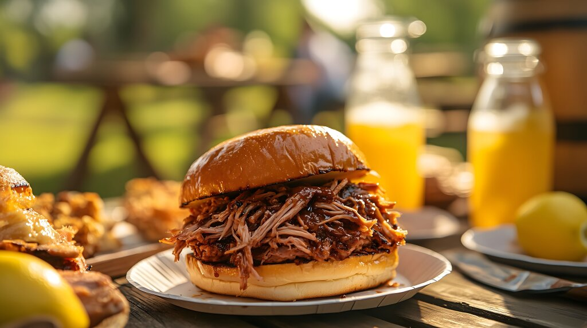

Slow Cooker Texas Pulled Pork
Prep time: 15 minutes
Cook time: 5 hours
Total time: 5 hours 15 minutes
Tailgating just got tastier
There are few things that top tailgating, especially if done right. You just need good friends and good food (plus some sort of game to watch).
But what's the best tailgating food? With so many options to choose from, I understand the decision might be overwhelming. If you want a recipe that's easy, packs a flavorful punch, and is loved by our community, try the most-saved tailgate recipe of all time: slow cooker Texas pulled pork.
[Source]
Ingredients
- 1 teaspoon vegetable oil
- 1 (4 pound) pork shoulder roast
- 1 cup barbecue sauce
- ½ cup apple cider vinegar
- ½ cup chicken broth
- ¼ cup light brown sugar
- 1 tablespoon prepared yellow mustard
- 1 tablespoon Worcestershire sauce
- 1 tablespoon chili powder
- 1 extra large onion, chopped
- 2 large cloves garlic, crushed
- 1 ½ teaspoons dried thyme
- 8 hamburger buns, split
- 2 tablespoons butter, or as needed
Directions
- Pour vegetable oil into the bottom of the slow cooker.
- Place pork roast into the slow cooker; pour in barbecue sauce, vinegar, and chicken broth.
- Stir in brown sugar, yellow mustard, Worcestershire sauce, chili powder, onion, garlic, and thyme.
- Cover and cook on Low for 10 to 12 hours or High for 5 to 6 hours until pork shreds easily with a fork.
- Remove pork from the slow cooker, and shred the meat using two forks.
- Return shredded pork to the slow cooker, and stir to combine with juices.
- Spread the inside of both halves of hamburger buns with butter. Toast buns, butter-side down, in a skillet over medium heat until golden brown.
- Spoon about ⅓ to ½ pounds of pulled pork into each toasted bun. Serves 8.
[Source]
Return Home